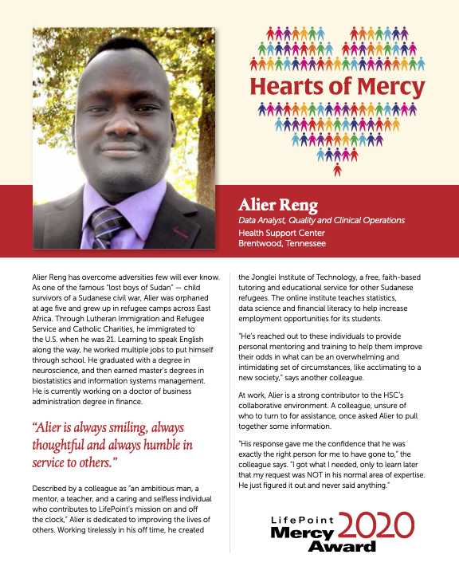
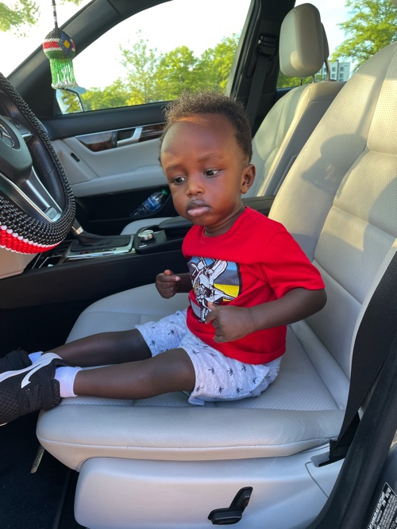
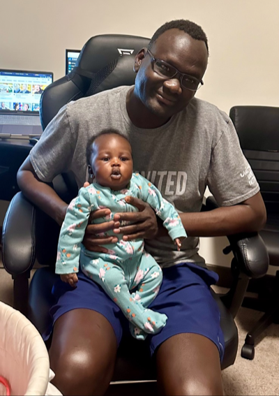

Alierwai DataStudio is a platform for knowledge sharing and continuous learning. With a focus on data science tutorials, statistics, and mathematics, it aims to inspire and empower individuals to enhance their skills and achieve their goals.
I am deeply passionate about the transformative power of data science, healthcare analytics, and statistics. With proficiency in R and Python programming languages, I aspire to make a positive impact on the lives of individuals worldwide, especially in my home country of South Sudan. Despite limited resources, I am committed to helping others learn data science, statistics, and mathematics from anywhere, at any time. Through my exceptional tutoring and mentorship services, I aim to empower individuals to achieve their data science goals and secure promising career opportunities in today’s rapidly evolving job market.
About ADS
ADS is a platform for knowledge sharing and continuous learning. With a focus on data science tutorials, statistics, and mathematics, I endeavor to inspire and empower individuals to enhance their skills and achieve their goals.
Mission Statement
Promoting data literacy through advanced training, consulting, tutoring in statistics and mathematics, and mentorship.
Vision Statement
I strive to impart knowledge and train the next generation of data scientists and analysts to help them unlock their full potential and positively impact the world.
About Me
I am an experienced data scientist and educator with over seven years of expertise in healthcare analytics, complemented by a rich background in university-level teaching spanning more than five years. Beyond the realm of data science and education, I find joy in cherished moments with my family and pursue hobbies that reflect my passion for mathematics and coding.
My educational journey includes earning an MBA in Information Systems Management from LeTourneau University in 2017, an M.S. in Professional Science with a concentration in Biostatistics from Middle Tennessee State University in 2011, and a B.S. in Neuroscience from the University of Texas at Dallas in 2008.
Following my Master’s in Biostatistics, I took on a lecturer position at Middle Tennessee State University, teaching introductory math and statistics under Dr. Don Nelson, Chair of the Mathematical Sciences department.
In December 2016, my healthcare analytics and data science journey commenced as a data analyst at Lifepoint Health. I worked on automating critical reports, significantly reducing error rates by 99% and deck production time by 81%. I was recognized for my contributions and promoted to Sr. Data Analyst in May 2021, and I received the HSC Mercy Award in 2020.
My interest in the intersection of healthcare and data science was sparked during my time at Lifepoint Health in Brentwood, TN. This passion eventually led me to my current role at ScionHealth, where I oversee the Quality and Clinical Analytics for the Community Hospitals Division. In addition to my professional achievements, I have established Alierwai DataStudio to provide training and mentorship to aspiring data scientists and analysts as part of my commitment to helping others.

I know that you can do all things; no purpose of yours can be thwarted (Job 42:2, NIV).
My Family
My wife, Angeth, my son, Akuien, and my daughter, Ayen, are the pillars of my success. They provide unwavering support and motivation that keeps me going, no matter the circumstances. I am deeply grateful for the strength of our family, God’s boundless mercy and the abundant blessings He bestows upon us every day.

